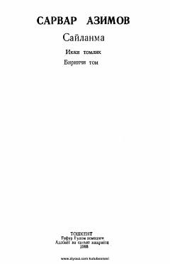

TMLev Tolstoyning insoniy qismat va axloqiy tanazzul haqidagi chuqur psixologik dramasi.
Lev Tolstoyning ushbu mashhur dramasi insoniy munosabatlar, oilaviy qadriyatlar va jamiyatdagi axloqiy tanazzul masalalarini o'rtaga tashlaydi. Asar bosh qahramon Fedya Protasovning hayotiy dramasi va uning o'z taqdiriga bo'lgan munosabati orqali chuqur psixologik tahlilni taqdim etadi.